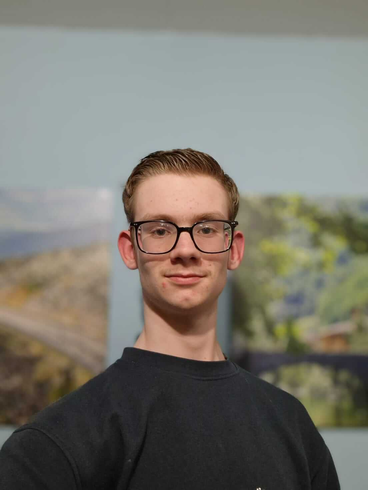

Hi, I'm Merijn
I’m a game developer who loves creating games. I specialize in Unity and C#. I currently study at Media College Amsterdam. My goal is to make enjoyable and fun games for everyone.
About Me

Welcome to my portfolio!
Introduction
My name is Merijn Florie, I am a 17-year-old student driven by game development.Currently, I'm studying Game Development at Media College in Amsterdam, where I learn how to convert my ideas into working games.
Progress
Throughout my study, I've gained a lot of experience in designing and programming games.From building simple games for small mechanics, to implementing complex mechanics like a feature that plays sounds in a random order.
I'm always seeking new challenges to enhance my skills.
Hard Skills
I use the engine Unity to create my games and I code my mechanics with C#,and I'm most interested in 3D games, top-down games, shooters and survival / sandbox games.
Soft Skills
My projects have taught me to think creatively, solve problems, and work effectively within a team. I am always able to adapt and learn new ways to work in a team.Ideal Workspace
I would like to get an internship at a company with around10-20 people. I work best in a calm environment and in a small team and
I hope I can learn more about the professional work.
Hobbies
Outside of my studies, I have a deep love for gaming.From intense shooters like Rainbow Six Siege and Valorant, to the creative freedom of sandbox games like Minecraft and Terraria,
Fascination and Inspiration
I've always been fascinated by the diversity and possibilities of how you can play a game, and use its features to create something unique.It's this passion that has driven me to become a game developer.
My inspiration comes from the games I play and the stories they tell.
I'm determined to make my own contribution to this creative field and create games that inspire, challenge, and entertain people.
My ultimate ambition is to be part of a team that develops groundbreaking games that change the industry.
Thank you for visiting my portfolio.
I look forward to continuing my journey in game development.